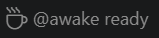

Long runs. One coffee cup.
Click the ready cup before a long coding run. Keep using your normal Copilot or Claude chat. Click the green cup when you are done.
Off by default. The default session has no expiry, but ends when you turn it off or close its window. Opening VS Code alone never activates protection.
Why this was started
Long coding chats can continue without keyboard or mouse input. A workstation may sleep partway through the agent's work. Keeping it awake merely because VS Code is open is not the intended solution.
Know what the cup means
A neutral cup with @awake ready means ready to start, not active. A spinner means Starting. The ready text disappears and only the green cup remains after the native helper acknowledges the request. A warning means Failed; enabled/disabled state is also in the tooltip.

Supplied UI illustrations, cropped to the control. These are not unattended hardware-test evidence.
No picker is needed for the cup. Set Duration (Hours) to 0 for until-off, or 1, 2, 4 or 8 hours. One-off durations are available in the Command Palette. Settings affect the next session only.
Auto is visibly Unavailable: pre-stop hooks are not terminal lifecycle proof, and native cancellation/window routing has not been verified. No unverified monitoring bridge or live hook configuration is installed.
On Windows, the request covers both system and screen activity, so the screen stays on. Use AC power for long runs. A green cup is not a guarantee against explicit Sleep, lid closure, lock/battery or company policies. No input is simulated and no power policies are changed.
Free and entirely local
The coffee control is free, local-only, needs no login, and reads no chat content. It creates no listening service, does not change models or tool permissions, and sends no prompts. Your chat keeps its normal provider.
Honest scope, small footprint
No runtime packages, background polling, or helper while Off. An active Windows window owns one local helper. Timed sessions have one expiry timer; until-off sessions have none. Off and window exit release only that window's ownership.
Agent Awake 1.2.2 provides explicit manual controls. The Marketplace
listing keeps the original ID
apkola29.agent-keep-awake for in-place upgrades.
Check the listing's version or use the versioned GitHub release.
Automatic chat detection and native macOS/Linux confirmation are not
claimed. There is no automatic Marketplace publishing workflow.
Validation scope: Windows native command/request and cleanup checks pass. Genuine unattended hardware testing remains inconclusive because input continued; this is not a claim that the reported laptop sleep problem has passed unattended UAT.